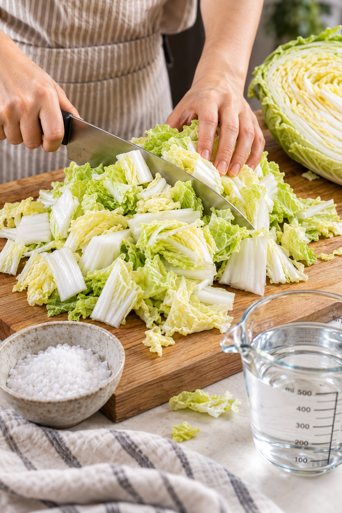

1
BRINE & REST
Cut 1 kg of wombok into bite-sized pieces.
Dissolve 100 g of salt in about 500 g of water.
Pour the salt water over the wombok and mix well.
Let it sit for 4–6 hours, tossing once during brining.